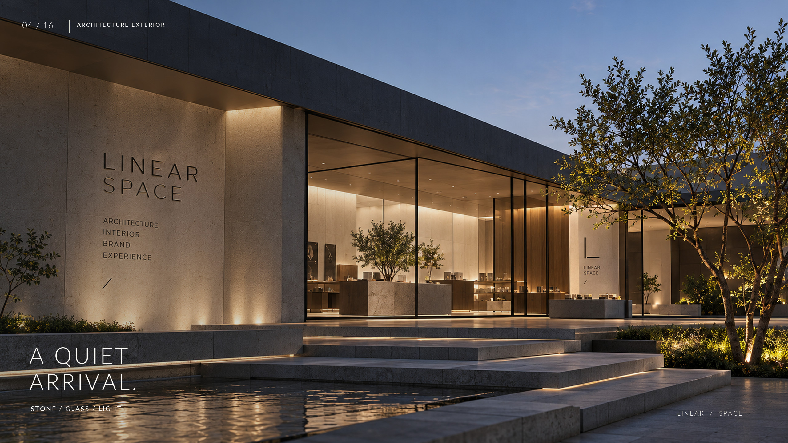
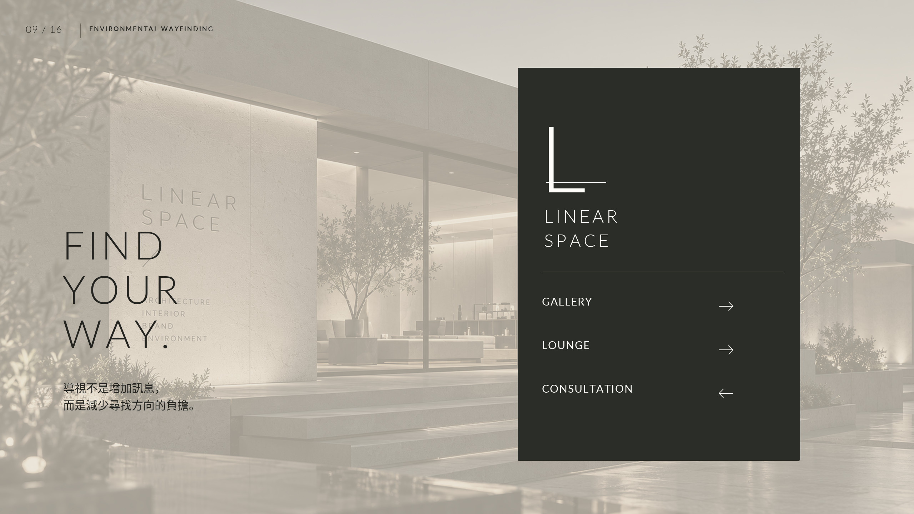
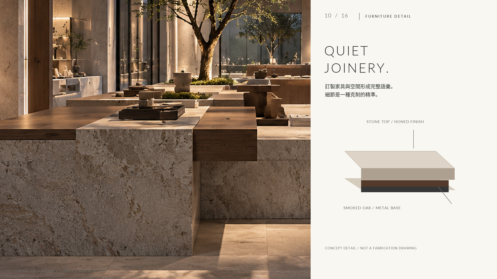
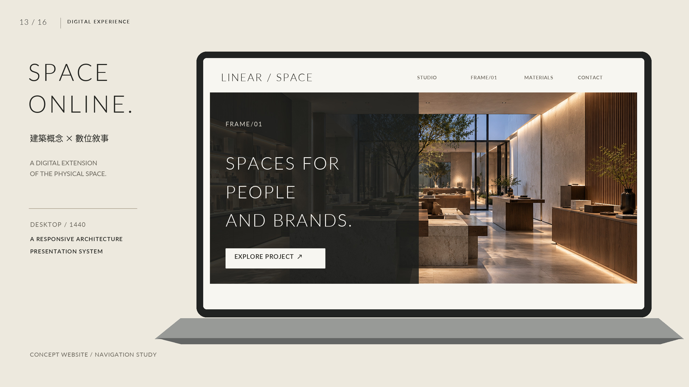
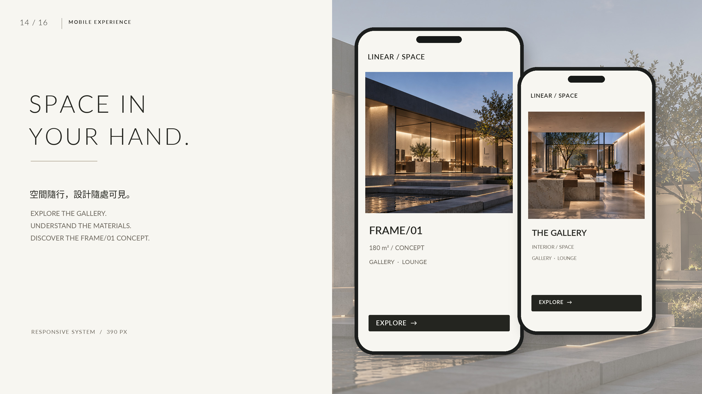

LINEAR SPACEFRAME/01
以空間，形塑品牌的日常。
Spaces for people and brands.
複合商辦管理與共享空間營運之自主建築環境提案。以 1F 180 m² 旗艦展示及共享接待中心為核心樣板，整合樓層導視、無障礙路線概念與招商空間查詢體驗。
An architectural and brand environment study for a commercial workplace & shared space operator. Featuring a 180 m² 1F flagship visitor & shared space centre, floorplate wayfinding, accessible route concepts, and leasing exploration.

PROJECT BRIEF & SPATIAL PLANNING
沉靜秩序，
包容人與品牌的靈感交會。
Quiet order,
accommodating brands and people.
在當代都會稠密的建築語境中，LINEAR SPACE 探索如何以極簡幾何、質樸石材與精準光影，創造一處能讓人放慢呼吸、專注於材質與對話的 180 m² 空間容器。
In dense urban density, LINEAR SPACE explores how pure geometric volumes, understated stone, and calibrated light can create a 180 m² spatial container that slows visitors down and invites deep engagement.
複合商辦與共享工作空間營運。 本案假設客戶為當代複合商辦與共享空間管理公司。全案以極簡幾何、質樸石材與精準光影，創造兼具商務辦公效率與品牌展示深度的空間體系。1F 180 m² 定位為旗艦展示與共享接待中心樣板，展演藝廊與交流沙龍為其多元實體情境。
Commercial workplace & shared space management. Conceived for a contemporary commercial workplace and shared space operator, LINEAR SPACE explores how pure geometric volumes, understated stone, and calibrated light can unite business efficiency with cultural hospitality. The 180 m² 1F serves as the flagship visitor and shared space concept.
1F 180 m² 精準動線佈局。 實體樣板依使用功能劃分為五大相互呼應的區域（24 + 64 + 38 + 24 + 30 = 180 m²），從開放迎賓、集中展演、親密交流到私密諮詢與高效後勤，層層遞進。2F 與 3F 則作為概念性之樓層與招商服務資訊模型（非實測施工工程圖）。
180 m² precise circulation (1F). The physical demonstration floorplate is organized into five complementary zones (24 + 64 + 38 + 24 + 30 = 180 m²)—balancing arrival, public gallery, design lounge, consultation, and backstage service. Upper floors (2F & 3F) are presented as conceptual workplace service models.
| ZONE / 機能分區 | TYPOLOGY / 空間屬性 | AREA / 面積 |
|---|---|---|
| 01 ENTRY | 入口迎賓玄關Arrival Threshold | 24 m² |
| 02 GALLERY | 中央展示藝廊Central Gallery | 64 m² |
| 03 LOUNGE | 交流休閒沙龍Design Lounge | 38 m² |
| 04 CONSULTATION | 深度設計諮詢室Consultation Suite | 24 m² |
| 05 BACK-OF-HOUSE | 後勤準備與機房Service Facilities | 30 m² |
| TOTAL | 全區總室內面積Total Floor Area | 180 m² |
01 / INTERACTIVE SPATIAL TOUR
五大分區空間導覽互動。
Explore the Five Spatial Zones.
點擊下方機能區塊切換空間檢視，預覽 180 m² 空間動線、材質細節與專屬照明設計。
Select functional zones below to inspect the spatial narrative, materiality and lighting configuration of the 180 m² concept.

入口沉靜迎賓玄關
自都會喧囂過渡至內斂空間的儀式起點
挑高石灰岩立面包覆與低眩光線性照明，引導訪客自然放慢腳步。中央設有石灰岩削切服務檯，以幾何純粹性營造第一觸點的品牌莊重感。
02 / WORKPLACE DIRECTORY & LEASING EXPLORER
複合商辦導覽與空間查詢系統。
Workplace Directory & Wayfinding Explorer.
支援 1F/2F/3F 樓層切換、用途篩選、初訪者可達路徑概念模擬及招商方案對照。以資訊架構降低選擇與到訪門檻。
Explore 1F–3F floorplates, filter by spatial typologies, simulate accessible wayfinding routes, and compare workspace leasing configurations.
未找到符合條件的空間
No Matching Spaces Found
目前篩選條件下無符合空間。請嘗試重設樓層、用途分類或清除搜尋關鍵字。
No spaces matched your current criteria. Try resetting floor, category filters or clearing the search keyword.
初訪者可達動線示意
Accessible Route Concept
招商空間方案對照與需求摘要
Workspace Plan Comparison & Inquiry Summary
選取任意兩組空間進行方案對照（例如：2F 會議空間 vs 3F 獨立工作室）。支援離線前端記憶體摘要生成，不收集個資、無金流或法律租約效力。
Select any two workspace plans for side-by-side evaluation. Features client-side in-memory inquiry summary; zero personal data collected, no legal lease or payment.
| SPECIFICATION / 比較項目 | PLAN A: (尚未選擇) | PLAN B: (尚未選擇) |
|---|
03 / MATERIAL & LIGHTING PALETTE
質樸對比，
在時間與光影中沉澱。
Quiet contrasts,
refined through time and light.
四重核心材質與 2700–3000K 暖光策略，構築出純粹、具觸感記憶的建築表皮。
A disciplined quartet of materials combined with a 2700–3000K lighting strategy forms a tactile, serene architectural envelope.
Limestone
天然石灰岩 Natural Limestone質地質樸溫潤、微孔隙表面，具有極佳的自然光漫射效果，構築立面與巨型展台的量體感。
Matte, micro-porous texture diffusing daylight gently across massive walls and monolithic plinths.
TACTILE · MINERAL · WARMSmoked Oak
煙燻橡木 Smoked Oak經自然碳化煙燻處理的深色橡木，紋理清晰深邃，帶來溫暖的觸覺體驗與吸音降噪功能。
Naturally fumed dark oak with prominent grain, introducing tactile warmth and acoustic dampening.
WARM · GRAIN · ACOUSTICMatte Metal
霧黑金屬 Matte Black Metal低反射陽極氧化霧黑鋁材與黑鋼，作為收邊、門框與標誌底材，精確勾勒空間的銳利線性。
Anodized low-reflection matte black aluminum and steel framing elements, defining sharp architectural contours.
SUBTLE · REFLECTIVE · LINEARFrosted Glass
霧面條紋玻璃 Frosted Glass半透光條紋霧面玻璃，維持空間通透採光的同時阻隔直接視線，創造柔和的光線漫射邊界。
Semi-translucent ribbed glass delivering daylight penetration while maintaining visual discretion.
DIFFUSED · SOFT · TRANSLUCENT04 / COMPLETE VISUAL NARRATIVE
16 幕建築與空間設計畫布。
16 Official Design Plates.
完整展示 16 張已核准的正式設計圖板。嚴格遵循 16:9 比例與 contain 顯示策略，點擊可開啟 2560 × 1440 原寸燈箱檢視。
Full presentation of all 16 approved design plates in sequential order. Rendered in strict 16:9 contain ratio; click any card to inspect full 2560 × 1440 master resolution.
05 / ENVIRONMENTAL GRAPHICS & DIGITAL UX
實體環境導視，
與自適應數位體驗的交會。
Signage systems meeting
responsive digital experiences.
設計不僅停留在牆體與地面，更延伸至訪客前行中的每一個識別指引與手中的數位互動。
Design extends beyond stone and timber to every wayfinding touchpoint and interactive digital handheld experience.

建築幾何環境導視系統
Architectural Wayfinding & Signage
導視不只是指示牌，而是建築表皮的一部分。採用霧黑金屬板鐫刻微型字體與俐落箭頭，在保持極簡美學的同時，提供清晰無負擔的路徑指引。
Wayfinding as an organic layer of architecture. Matte black metal panels engraved with precise typographic scales and clean arrows provide intuitive direction without visual noise.

沉靜木作與石材收邊工藝
Quiet Joinery & Stone Detailing
為沙龍與藝廊量身打造的展陳島台。石材邊角施以精密 45 度倒角，與煙燻橡木接縫處以 3mm 陰刻勾縫收邊，展示沉靜家具概念（非實際施工工程圖）。
Custom exhibition plinths tailored for the gallery. Stone surfaces feature precision 45-degree chamfers, joined to smoked oak with 3mm shadow gaps (schematic furniture concept, not fabrication engineering).

沉浸式桌機展演網站
Immersive Desktop Web Experience
將實體建築概念轉化為數位線上平台。以暗調背景、優雅非對稱網格與高畫質影像，讓遠端訪客亦能感受 FRAME/01 的空間比例與光影流動。
Translating physical space into digital architecture. Dark-mode canvas, refined asymmetric grids, and rich imagery allow global audiences to experience the proportions and lighting of FRAME/01.

掌中空間導覽與選品預約
Mobile Spatial Companion
針對行動裝置優化的響應式介面。流暢的觸控滑動、清晰的區域切換與直覺的預約導覽體驗，打造實體與虛擬無縫銜接的當代參訪流程。
A tailored responsive companion designed for mobile devices. Fluid gesture navigation and clean zone switching create an effortless bridge between digital planning and physical visitation.
06 / PROJECT GOVERNANCE & FACTUAL DISCLOSURE
自主概念研究聲明
Concept Study Disclaimer
本專案（LINEAR SPACE / FRAME/01）為設計師 Howard Huang 與 FLTL 自主發起之複合商辦管理與共享空間營運建築環境提案。非實際商業委託案，未取得建築執照、消防審查、節能綠建築認證或工程施工圖簽證。1F 180 m² 旗艦展示與共享接待中心樣板五區面積經嚴格設定（24 + 64 + 38 + 24 + 30 = 180 m²）；2F 與 3F 僅為空間資訊與招商概念模型，未作實際樓板測量與法定工程無障礙簽證。
This project (LINEAR SPACE / FRAME/01) is a self-initiated architectural concept and brand environment study for a commercial workplace & shared space operator authored by designer Howard Huang and FLTL. It is not a commercial commission, and has not undergone building permitting, structural sign-off, fire safety review, or green building certification. The 1F flagship visitor & shared space centre encompasses 180 m² across five verified zones (24 + 64 + 38 + 24 + 30 = 180 m²); upper floors (2F & 3F) are informational concept models without physical area measurements or certified accessibility engineering.
影像與技術揭露
Rendering & Technical Truth
全套 16 幕設計圖板均以 2560 × 1440 最終畫布排版輸出。部分原始攝影元素源自 1672 × 941 高階生成影像並經重採樣合成，絕無虛假宣稱原生 4K 實景攝影。SHOT 11 之人物動線視覺化為動態與尺度概念示意，非竣工實景之真實訪客攝影；SHOT 10 家具木作為概念接合研究，非實際施工工程圖。本網站所有空間檢索、路徑模擬與招商比對均為純前端記憶體示範，無任何個人資料收集、真實預約、即時租金報價或線上商業租賃契約行為。
All 16 design plates are composed on 2560 × 1440 master canvases. Select photography elements originate from 1672 × 941 native AI generation resampled with Lanczos filtering; no claim of native 4K photography is made. SHOT 11 human circulation silhouettes represent conceptual movement visualizations, not physical visitor photography at a completed project. SHOT 10 furniture joinery is schematic concept design, not fabrication engineering. All directory filtering, route simulation, and workspace comparisons are client-side in-memory demonstrations without data collection, live bookings, rent quotes, or binding commercial leases.
LINEAR SPACE / PORTFOLIO 08